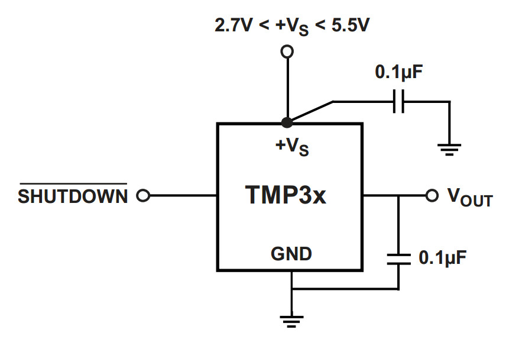
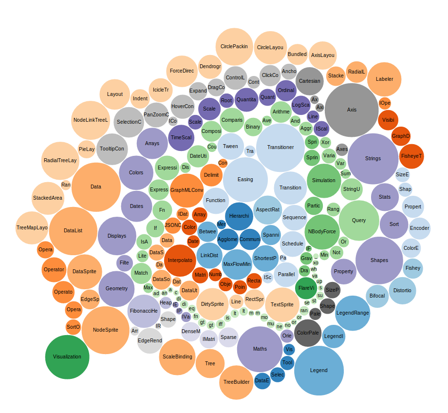
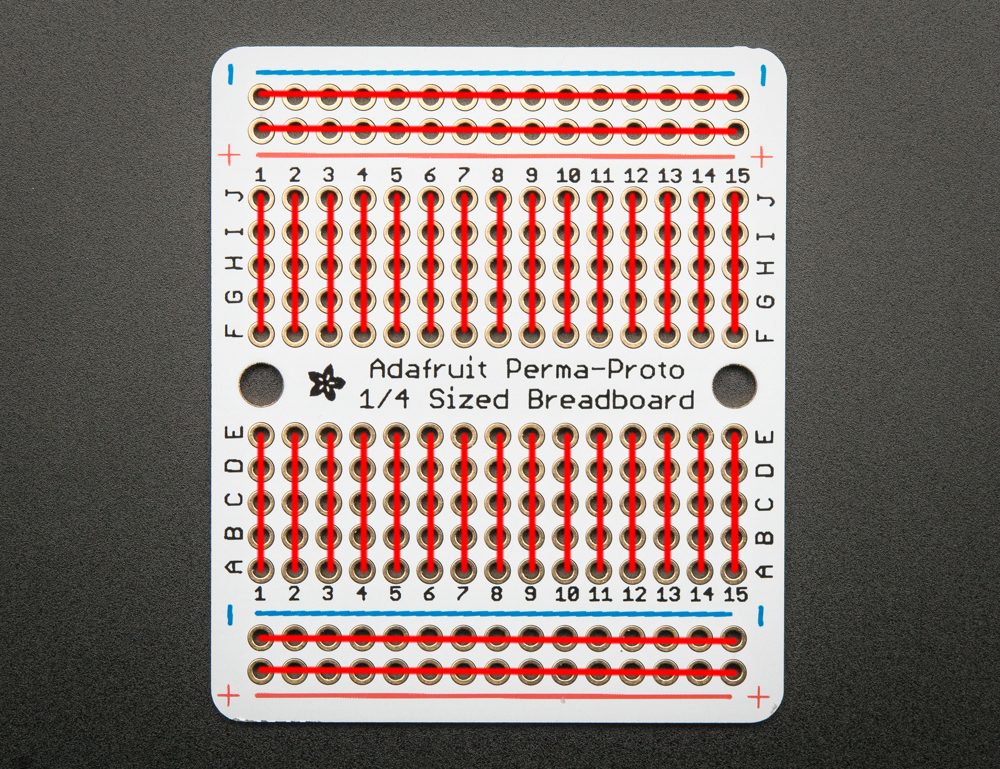
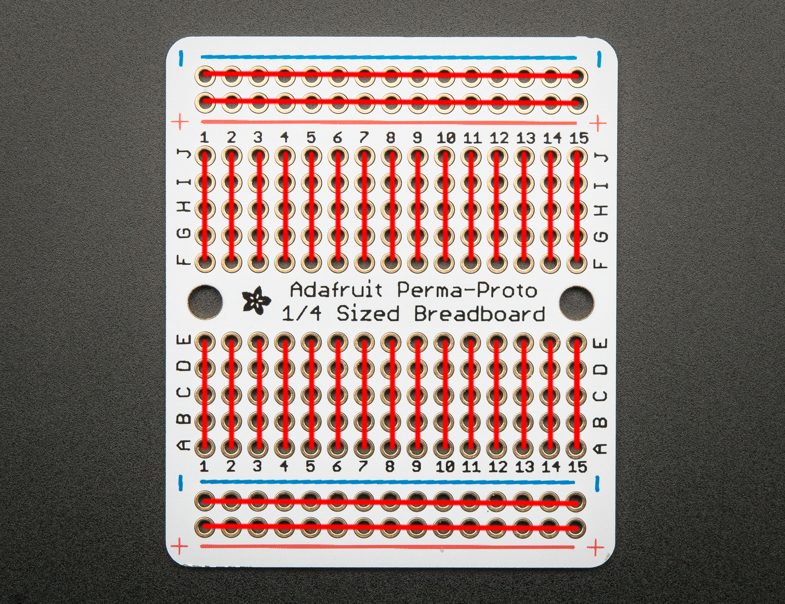

Température : capteur TMP36

Installation de Johnny Five
// package.json
{
"dependencies": {
"johnny-five": "latest"
}
}
npm install
Affichage de la température
// package.json
var five = require('johnny-five');
var board = new five.Board();
var temperatureSensor;
board.on('ready', function() {
temperatureSensor = new five.Sensor('A0');
temperatureSensor.on('data', function() {
console.log(getTemperature() + "°C");
});
});
function getTemperature() {
var out = temperatureSensor.value * (5 / 1023);
return Math.round(out * 100 – 50);
}
Lissage avec condensateurs

- Très faible intensité
- Très sensible au bruit
- Trop longs fils => mesures inexploitables
- Lissage avec condensateurs
Lumière : résistance SEN-09088

- Datasheet : SEN-09088
- Résistance non linéaire
- Étalonnage préalable
| Exposition |
Luminosité |
Résistance |
| Obscurité (dans un carton) |
1 Lux |
1.4 MΩ |
| Temps pluvieux |
1 100 Lux |
850 Ω |
| Lampe de poche |
8 000 Lux |
200 Ω |
| Plein soleil |
30 000 Lux |
120 Ω |
Pont diviseur de tensions

Loi d'Ohm :
$U = R * I$
Loi des mailles :
$U = U_{1} + U_{2}$
Diviseur de tensions :
$U_{2} = U * \frac{R_{2}}{R_{2} + R_{1}}$
$R_{2} = \frac{U_{2} * R_{1}}{(U - U_{2})}$
Affichage de la luminosité
var VOLTAGE = 5;
var LIGHT_DIVIDER_RESISTANCE = 10;
board.on('ready', function() {
lightSensor = new five.Sensor('A1');
lightSensor.scale([0, 1023]);
lightSensor.on('data', function() {
console.log(getLightResistance() + '%');
});
});
function getLightResistance() {
var r = lightSensor.value * LIGHT_DIVIDER_RESISTANCE;
r /= (VOLTAGE – lightSensor.value);
return r;
}
Capteur d'humidité MacGyver

- Tension : fonction linéaire de l'humidité
- Étalonnage requis
- Terre sèche : 150 kΩ
- Terre humide : 10 kΩ
- Fil galvanisé ou inox
- Terreau : réacteur chimique
Mesure du taux d'humidité
var HUMIDITY_DRY_RESISTANCE = 150;
var HUMIDITY_WET_RESISTANCE = 10;
var HUMIDITY_DIVIDER_RESISTANCE = 10;
board.on('ready', function() {
humiditySensor = new five.Sensor({ pin: 'A2', frequency: 2000 });
humiditySensor.scale([0, VOLTAGE]);
humiditySensor.on('data', function() {
console.log(getHumidity() + '%');
});
});
function getHumidity() {
var resistance = humiditySensor.value * HUMIDITY_DIVIDER_RESISTANCE / (VOLTAGE - humiditySensor.value);
var humidityRate = 100 * (HUMIDITY_DRY_RESISTANCE - resistance) / (HUMIDITY_DRY_RESISTANCE - HUMIDITY_WET_RESISTANCE);
return Math.round(humidityRate);
}
Websockets
- Communication bidirectionnelle
- Notification en direct (push)
- Standardisé par le W3C et l'IETF
- Utilisation de socket.io
Installation de socket.io
// package.json
{
"dependencies": {
// ...
"socket.io": "latest"
}
}
npm install
Socket.io : côté serveur
var io = require('socket.io').listen(8080);
board.on('ready', function() {
io.sockets.on('connection', function(socket) {
console.log('New connection: ' + socket.id);
tempSensor.on('data', function() {
socket.emit('temp', getTemperature());
});
});
});
Socket.io : côté client
<script src="//:8080/socket.io/socket.io.js">
</script>
var socket = io.connect("//:8080");
socket.on("temp", function (value) {
$(".temperature .value").text(value + "°C");
});
D3.js

- Visualisation de données
- JS, SVG, HTML et CSS
- Powerful selections: enter / update / exit
- Animations et transitions
- Beaucoup d'exemples
Courbe des températures
var minValue = -10, maxValue = 40;
var x = d3.scale.linear().range([0, width]).domain([0, 100]);
var y = d3.scale.linear().range([-10, 40]).domain([height, 0]);
var lineFunction = d3.svg.line()
.x(function(d, i) { return x(i); })
.y(function(d) { return y(d.temperature); });
var graph = selection.append("svg")
.attr({ width: width, height: height })
.append("g");
graph.selectAll("path")
.data(selection.data())
.enter()
.append("svg:path")
.attr({ "class": "line", "d": lineFunction);
Mise à jour
function update(selection) {
var data = selection.datum();
var full = data.length > maximumDisplayedData;
graph.select("path.line")
.data([data])
.attr({ "d", lineFunction, "transform", null });
if (!full) return;
var transform = "translate(" + x(-1) + ")");
graph.selectAll("path")
.transition()
.duration(500)
.ease("linear")
.attr("transform", transform);
data.splice(0, 1);
}
Le puzzle s'assemble !
var temperatures = [];
var lineChart = d3.chart.line();
var tempChart = d3.select(".temperature .chart")
.data([temperatures])
.call(lineChart);
socket.on("temp", function(value) {
temperatures.push(value);
d3.select(".temperature .chart")
.data([temperatures])
.call(lineChart.update);
$(".temperature .value").text(value + "°C");
});


 
